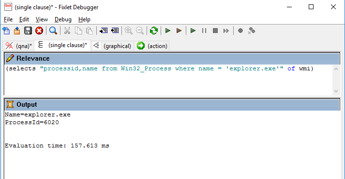
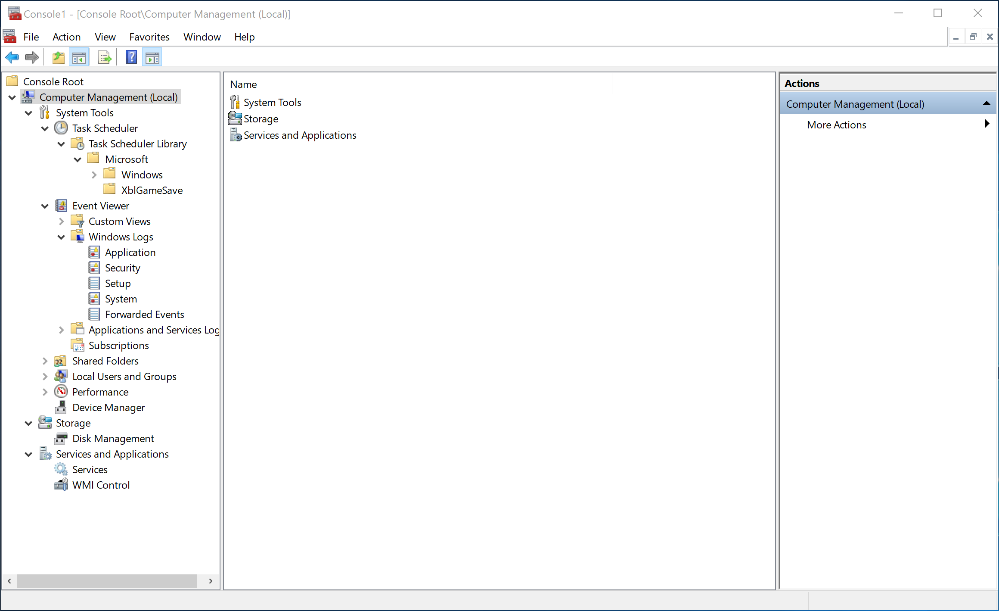
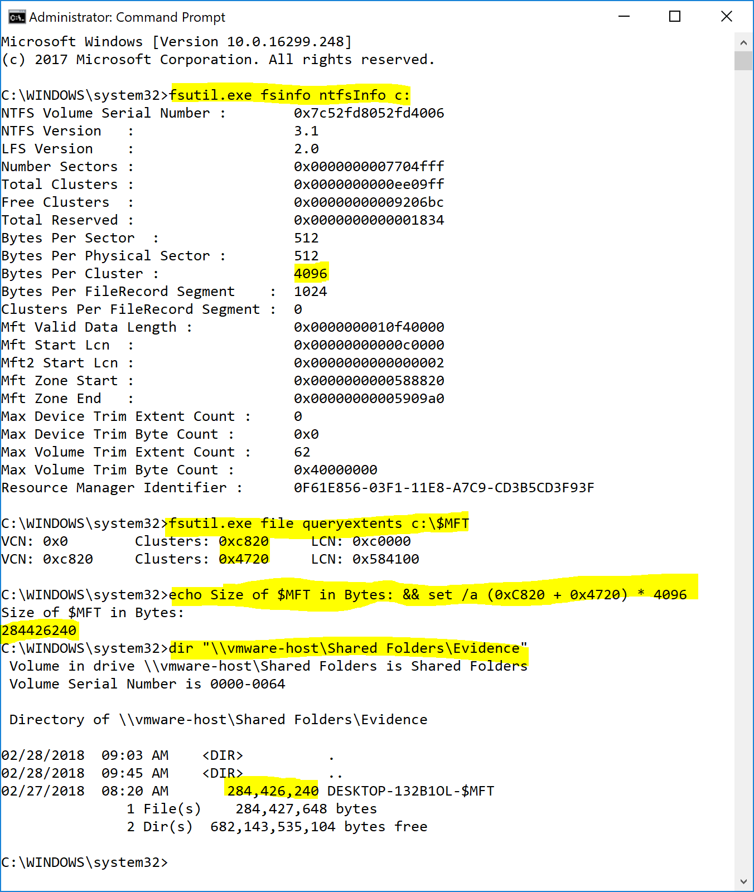
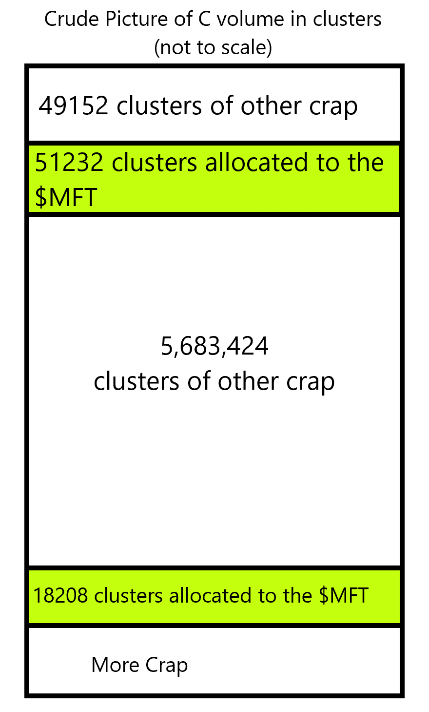
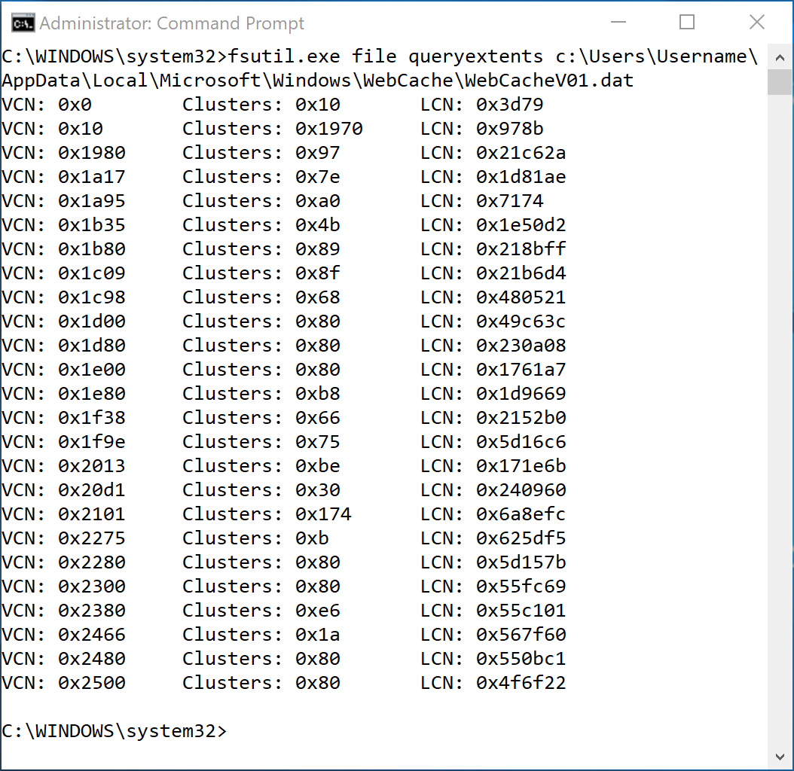

Advanced DFIR Wizard Master Class
Welcome
Welcome to the Advanced DFIR Wizard Master Class by Jonathan Glass
Scope of this Course
In scope for this class:
- Hands on Tools, Tactics, and Techniques of DFIR
- System Administration for Incident Responders
- Computer Science for Incident Responders
- Acquisition and Analysis of Windows artifacts
- Examples and Exercises
- Python and PowerShell
Out of scope for this class:
- The 4 Step Digital Forensics Process
- OSI Model
- Legal crap
- Federal Rules of Evidence
- Chain of custody
- Where babies come from
- Important stuff but learn it somewhere else.
Course Overview
- Disclaimers
- Windows Remote Admin for Incident Responders
- Remote Acquisition of Windows Artifacts
- Computer Science for Incident Responders
- The Value of Unstructured Analysis
- Windows Disk Artifact Analysis
- Windows Memory Analysis
- Network Analysis
- Timelining for Fun and Profit
0. Disclaimers
You have to dig
As I built this course, I started realizing that perhaps the reader might not understand everything I am talking about. DFIR is not a field where everyone can know everything. It’s just too wide and too deep. Attempting to define every term and provide background on all material would bloat this project beyond scope and diminish the value. If I didn’t cover something, you might have to look it up. Searching for information is the crux of this job.
I tried to keep it cheap
In an effort to limit barriers to education, I tried to limit the examples in this course to native, open source, or readily available free tools. If for some reason I mention a commercial tool, it’s because it is worth documenting for completeness. You are going to need a Windows 7 or newer system to play with to put a lot of this to use.
Audience
I think this course is written to provide examples of DFIR techniques for two groups of people:
- Folks that have been in Information Security in one capacity or another and are looking to get into more DFIR work.
- Others who might find this information useful or interesting.
This should not be the first computer related course you attempt.
Omissions
There are two reasons I didn’t include something in this course:
- I didn’t know about it. It happens. Often.
- I thought you wouldn’t immediately benefit from knowing it. This career field is deep, wide, and almost any fact about how things work can be refuted with an exception. This course is not designed to be extremely comprehensive, just helpful.
Either way, feel free to send me feedback and I will take a look.
Tone
This is meant to be informal. While that might come across as unprofessional and lacking academic polish, I find it makes the material more digestible and that is point of learning, right?
1. Windows Remote Admin for Incident Responders
Without a system administration background, many incident responders struggle with basic tasks like remotely starting and stopping processes on target machines. Inversely, Incident Responders with sysadmin experience are often faster and more effective. The more familiar you are with native Windows commands, the faster your can operate.
While this course cannot hope to supplant the experience gained by years at your average help desk, I will try to highlight some of the more helpful techniques that get me from A to B.
Topics
- WMI
- MMC
- PsExec
WMI
One of the most practical skills you can have as a Windows Admin is an understanding of WMI. Windows Management Instrumentation (WMI) is the infrastructure for management data and operations on Windows-based operating systems.
WMI Terminology
The four big vocabulary terms we are going to use for the section are:
- Namespaces: A hierarchical structure of WMI objects used to organize Classes
- Classes: A WMI Object that contains fun stuff like Properties and Methods
- Property: Information that can be retrieved.
- Method: Actions that can be taken.
For a much better explanation, I recommend: https://www.darkoperator.com/blog/2013/1/31/introduction-to-wmi-basics-with-powershell-part-1-what-it-is.html
WMI Example
To get a list of all processes running on a workstation that match a certain name with process IDs, you could use something like this:
SELECT processid,name FROM Win32_Process where name='powershell.exe'
| Term | Value |
|---|---|
| Namespace | Isn’t defined so the default (root\CIMV2) is assumed |
| Class | Win32_Process |
| Properties | processid and name |
| Methods | Not used because we are just listing process info |
WQL
WMI Query Language (WQL) is a bastardized version of SQL used to administer WMI. WQL is a deep dark rabbit hole of COM objects that I refuse to try to document but the main statements you need to know are SELECT, FROM, and WHERE.
“WQL looks neat but where do I use it?” Great question! WMI is accessible in a variety of flavors on modern Windows systems. You can leverage WQL with these handy native Windows solutions:
PowerShell
$query = "SELECT processid,name FROM Win32_Process where name='powershell.exe'"
Get-WmiObject -query $query
 Reference: https://blogs.technet.microsoft.com/heyscriptingguy/2012/07/10/three-easy-ways-to-use-powershell-and-wql-to-get-wmi-data/
Reference: https://blogs.technet.microsoft.com/heyscriptingguy/2012/07/10/three-easy-ways-to-use-powershell-and-wql-to-get-wmi-data/
WMIC
The WMI command-line (WMIC) utility provides a command-line interface for WMI. WMIC is one of my favorite command line applications because it condenses a lot of the
wmic /node:computername process where (name = "cmd.exe") get processid,name
 References:
https://msdn.microsoft.com/en-us/library/aa394531(v=vs.85).aspx
http://jon.glass/blog/lists-some-wmic-commands/
References:
https://msdn.microsoft.com/en-us/library/aa394531(v=vs.85).aspx
http://jon.glass/blog/lists-some-wmic-commands/
Visual Basic Scripting Example (more or less deprecated)
strComputer = "."
Set objWMIService = GetObject("winmgmts:\\" & strComputer & "\root\CIMV2")
Set colItems = objWMIService.ExecQuery( _"SELECT * FROM Win32_Process WHERE name=’cscript.exe’",,48)
For Each objItem in colItems
Wscript.Echo "Name: " & objItem.Name
Wscript.Echo "ProcessId: " & objItem.ProcessId
Next
While VBS is not my first choice, it is good to at least be aware of it because it is still very much in use by admins and attackers alike.
Depending on what 3rd party tools you have in your environment you might be able to utilize these:
Python
The Python WMI module is a lightweight wrapper on top of the pywin32 extensions.
import wmi
c = wmi.WMI ()
for s in c.Win32_Process ():
if s.Name == "python.exe":
print(s.Name, s.ProcessID)
BigFix Relevance
You might not have this in your environment but many companies have clients on endpoints that are designed for system administration or patching that can to utilized to perform incident response functions as well. This is especially true in SMBs where the security guy is also the patching and sysadmin team.
(selects "processid,name from Win32_Process where name = 'explorer.exe'" of wmi)

WMI classes of DFIR interest
There is a lot of super geeky DFIR information you can pull out of WMI properties and methods that can give you wizard like powers over remote machines. Here are a few of my favorites :
| Class | Properties | Methods |
|---|---|---|
| Win32_Process | CommandLine CreationDate Description ExecutablePath Name OSName ParentProcessId ProcessId SessionId | AttachDebugger Create GetOwner GetOwnerSid Terminate |
| Win32_Service | Description DisplayName InstallDate Name PathName ProcessId ServiceType Started StartMode StartName State Status | Change ChangeStartMode Create Delete PauseService ResumeService StartService StopService |
| Win32_LogonSession | AuthenticationPackage Description InstallDate LogonId LogonType Name StartTime Status | N/A |
| Win32_NetworkLoginProfile | AccountExpires BadPasswordCount Description FullName LastLogoff LastLogon LogonServer Name NumberOfLogons PasswordAge PasswordExpires PrimaryGroupId Privileges Profile UserId UserType | N/A |
| Win32_LogicalDisk | BlockSize Description DeviceID DriveType FileSystem FreeSpace MediaType Name Size VolumeName VolumeSerialNumber | Chkdsk Reset SetPowerState |
| Win32_StartupCommand | Caption Command Description Location Name SettingID User UserSID | N/A |
| Win32_OperatingSystem | BootDevice BuildNumber CurrentTimeZone InstallDate LastBootUpTime LocalDateTime Locale Manufacturer Name NumberOfProcesses NumberOfUsers Organization OSArchitecture OSType SerialNumber ServicePackMajorVersion ServicePackMinorVersion SystemDrive | Reboot SetDateTime Shutdown |
Putting It To Work
Scenario: Your detection team says a user on RemoteComputerName received a malicious Word document that downloads a Remote Access Trojan that your antivirus doesn’t have a signature for. From your threat intelligence, this malicious Word document uses a macro to drop an EvilFile.exe in the users Temp directory.
Let’s verify the alert..maybe the user didn’t open the Word doc…(yeah right)
wmic /node:RemoteComputerName process where (name like '%scchost.exe%') get executablepath,processid,parentprocessid /format:list
ExecutablePath=C:\Users\Username\AppData\Local\Temp\Scchost.EXE
ParentProcessId=1040
ProcessId=3712
Crap. Looks like the user might have clicked on it. Let’s verify that parent process just to be sure:
wmic /node:RemoteComputerName process where (ProcessId = 1040) get executablepath /format:list
ExecutablePath=C:\Program Files\Microsoft Office\Office16\WINWORD.EXE
Double crap. Looks like this is a confirmed compromise of a workstation. For fun and containment, let’s kill that malicious process using a WMI method:
wmic /node:RemoteComputerName process where (name ='Scchost.exe') CALL Terminate
Executing (\\RemoteComputerName\ROOT\CIMV2:Win32_Process.Handle="3712")->Terminate()
Method execution successful.
Out Parameters:
instance of __PARAMETERS
{
ReturnValue = 0;
};
For even MORE fun, like copy that malicious file to an analysis share so we can get a better look at it:
wmic /node:RemoteComputerName process call create "xcopy /Y C:\Users\Username\AppData\Local\Temp\Scchost.EXE \\AnalysisShare\Scchost.exe.bin"
For a lot less fun, let’s call the User explain the situation, shut it down remotely, and go get the workstation to determine what this malware did :
wmic /node:RemoteComputerName os call Shutdown
Disclaimer: This scenario is largely BS. Malware isn’t usually this easy to kill and as more work becomes remote, it is increasingly rare to physically walk over to the user’s cube and take their workstation.
MMC
I imagine I scared some of off you with all that “coding” and “command line stuff”. While there are GUIer options to accomplish Windows administration tasks, they aren’t as efficient or sexy. If you are against coding all together, there is an X at the top right or left of your browser. We can part ways now and no one’s feelings need to get hurt. For the sake of completeness, I will cover MMC which is a GUI and can do Windows admin tasks but it is not my “go to”. According to the big M, the Microsoft Management Console (MMC) is an extensible common presentation service for management applications. 
This console gives you access to some a lot of administration tools.
- Computer Management Snap-In
- System Tools
- Task Scheduler
- Good for running processes remotely, shutting down workstations, and whatnot
- Event Viewer
- Good for remotely viewing logs but not great
- Local Users and Groups
- Good for administering local user accounts
- Device Manager
- Handy when you need to see if a USB is plugged in
- Task Scheduler
- Storage
- Disk Management
- Also handy for seeing if external media is plugged in
- Disk Management
- Services and Applications
- Services
- Allows for administration of Windows services. (start, pause, stop)
- System Tools
I don’t use this much for IR but if you are in an environment where you don’t have any other tools, this is a native GUI solution that might get you where you need to go.
PsTools
Way way way back in 1996, Mark Russinovich and Bryce Cogswell created a little company called Winternals Software LP that created a bunch of software to help administer Windows 2000 boxes. Long story short…in 2006 Microsoft bought the company and all their tools now known as Windows Sysinternals. There is a cornucopia of awesome tools that I will mention throughout the duration of this course but for now we are going to focus on some of the PsTools Suite I find most handy. While you can accomplish all of these functions via WMI via PowerShell or WMIC, these tools are helpful for those who prefer tools with a dedicated tasks and help menus. There is absolutely no shame in that but I found, the more comfortable I become with WMI scripting, the less I needed most of this suite.
Windows Admin using PsTools Suite
| Tool | Purpose |
|---|---|
| PsExec | execute processes remotely |
| PsKill | kill processes by name or process ID |
| PsList | list detailed information about processes |
| PsLoggedOn | see who’s logged on locally and via resource sharing |
| PsService | view and control services |
| PsShutdown | shuts down and optionally reboots a computer |
Most of the PsTools suites are fairly straightforward and require almost no explanation but PsExec is robust enough that it bears covering.
PsExec
From Microsoft
“PsExec is a light-weight application that lets you execute processes on other systems, complete with full interactivity for console applications, without having to manually install client software. PsExec’s most powerful uses include launching interactive command-prompts on remote systems and remote-enabling tools like IpConfig that otherwise do not have the ability to show information about remote systems.”
PsExec is to DFIR as a good blaster is to Han Solo. I can’t tell you how many times PsExec has saved my bacon. Not to mention how many times I have pulled off some nifty DFIRfu with it’s various options. Everytime I read PsExec’s Usage I learn something new that it does.
Example: Elevating to System Account:
One of my favorite tricks is to run remote processes as the System account and not a puny User account as seen below:
 This grants a higher level of privileges and leaves less of a footprint on the remote machine. I rarely want to use my own account for anything on a remote machine unless I have to.
This grants a higher level of privileges and leaves less of a footprint on the remote machine. I rarely want to use my own account for anything on a remote machine unless I have to.
Pro Tip: If you are copying evidence from a remote machine to a collection share using PsExec to run as the system account, make sure the share is configured to grant Computer account of the target workstation write permission or you will get errors that will run you in circles. Doesn’t matter if your admin account has rights if you are running as the Computer.
Example: Copying an Utility and then Executing it on a Remote System :

PsExec.exe \\192.168.164.130 -c RawCopy.exe /FileNamePath:C:0 /OutputPath:\\ForensicServer\dropbox\ /OutputName:$MFT
There is a lot going on in this example so let’s break it down…
- I am using PsExec to remotely execute RawCopy on a remote host with an IP of 192.168.164.130.
- Since the remote host probably doesn’t have RawCopy, a third party tool, laying around, I used the -c flag to copy the program over to the remote system. The -f flag is used just in case it was already there so we can overwrite it.
- RawCopy’s options are fairly straightforward. I am copying the Master File Table (record 0) from C:\$MFT on the remote machine to my \\ForensicServer\dropbox share for analysis
- After RawCopy finished, I check my dropbox folder to confirm the $MFT landed safely.
Example: Interacting with the User:
PsExec runs a console session by default but can be configured to interact with the logged on user’s session using the -i option. This is helpful in those rare instances where you need to user to see something you are doing. 99% of the time the user is going to be logged in under the second session or session 1. It’s not often but I have used this a couple times over the years.
In this example, I use PsExec to create two instances of notepad.exe on my local machine. One is in user session and visible, the other is not.

The -d flag is used to detach the PsExec session from the child process so we don’t have to wait until notepad exits to continue. This is very handy for DFIR collection scripts that might take a while. Detach the process and let it do it’s thing. I like to use -d on targets that are on flakey VPN connections so that if the connection drops, the process is still running on the remote system. The obvious downside is, you can’t interact with the session after it is detached.
Example: Running commands on multiple machines
PsExec allows you to perform administrative tasks on multiple workstations but you can only interact with one at a time. Here is an example of getting a command shell on two different machines:

PsExec.exe \\DESKTOP-132B1OL,192.168.164.130 cmd
I can’t access the second machine until I exit the session with the first one. To speed that process up, using the -d to detach the session from the process will make it much faster.

When would you ever need to do this? Let’s say you want to collect artifacts from the two machines involved in an alert you received from your detection team. You could bust out your PsExec skills and do something like this:
Breakdown:
#Bit of a cheat code to copy a file over before using it.
\tools\PsExec.exe \\DESKTOP-132B1OL,RemoteMachine -d -f -c \Tools\RawCopy.exe
What does this do? PsExec will copy \Tools\RawCopy.exe to the c:\Windows folder of DESKTOP-132B1OL and try to run it. Same with RemoteMachine. RawCopy needs all sorts of command line options so it will gracefully exit BUT the tool has be in place. Why didn’t i use the -c switch? I’ll show you:
\tools\PsExec.exe \\DESKTOP-132B1OL,RemoteMachine -d cmd /c c:\Windows\RawCopy.exe /FileNamePath:C:0 /OutputPath:"\\vmware-host\Shared Folders\Evidence\" /OutputName:^%computername^%-$MFT
On my evidence share, I am looking to have one file from each of these workstations. To make sure I can tell the two $MFTs apart, I used the environment variable %COMPUTERNAME% from the remote computer for file name passed to RawCopy.
To access the remote environment variables, I needed to use cmd to launch RawCopy which means I couldn’t use the -c to copy it over in one foul swoop. By using the carets to escape the percent signs, like this ^%computername^%-$MFT, you can pass the variable to the next command interpreter. If you don’t, your command prompt will interpret it and save all of the file names as YOUR computer name and overwrite each other. Took me a second to figure that out.
If all this sounds convoluted, you’re paying attention. The point of this course highlight some more complicated methods of approaching the litany of challenges you will encounter during your DFIR day.
2. Remote Acquisition of Windows Artifacts
Some folks reading this are convinced that Incident Response is all done through Endpoint Detection and Response solutions and in 2018 no one drops collection scripts to gather artifacts for analysis. Those people are wrong.
The first thing you should know is you will run into problems. Even when your collection tool is working perfectly; network connections drop, hard drives run out of room, antivirus and data loss prevention software will freak out… this is going to happen. Embrace it.
This chapter is going to cover as many of the lessons learned as I can think of.
Issues with Tools for Remote File Acquisition
This can quickly get religious but I am not a fan of most commercial tools. Many do WAY too much stuff I don’t need or want for my OCD to handle. I am not going to bad mouth any particular vendor but there are a lot of solutions that just don’t work for my exact needs.
Things I have found annoying about collection tools:
- Some tools require special dongles which is often not practical with modern global enterprises.
- Some use netcat like functionality to talk directly from your workstation to target which triggers NIDS and is blocked by NIPS.
- Some won’t copy or even find some files on the target because they are locked by the OS or a third party tool like AV or DLP.
- Some free tools get flagged by AV because they are not signed or what they are written in.
- Some tools take too long and then produce too little.
- Some tools are primarily geared for Law Enforcement and don’t cater to the enterprise teams that will probably never testify in court.
- Most are WAY overpriced for what they offer.
Enough of my complaining. After a little science, I will explain my reasoning for the tools I use and let you figure out what works best for your work flow and environment.
The Underlying Mechanics of Copying Locked Files on Windows
Before we discuss tools and examples, an understanding of the mechanics of the NTFS filesystem is helpful to ensure you can adapt and overcome when various things get in between you and your artifacts. Here is a piece of DFIRfu using completely native windows commands. Admittedly, this is more DF than IR and I know it is a lot of hexadecimal but stick with me… 
Breakdown
fsutil.exe fsinfo ntfsInfo c:- This command shows us a bunch of useful information for how data is stored on this Volume but all we need for now is the Bytes per Cluster: 4096.
- We could have used something like this:
wmic volume where (name="c:\\") get blocksize - This tells us that the file system allocates space to files in chunks of 4096 bytes. Even if the file is smaller, it gets the whole 4K to itself.
fsutil.exe file queryextents c:\$MFT- This command shows use the clusters allocated to the $MFT. I pick on the $MFT a lot in my examples for two reasons : it contains almost all of the file system information on the system and it is not directly accessible through the operating system.
- This command outputs three columns of information:
- VCN: Virtual Cluster Numbers are used to sequence chunks of allocated data kinda like numbered puzzle pieces.
- Clusters: This is the number of contiguous Clusters allocated per Data Run.
- LCN: Logical Cluster Numbers are basically used as addresses. This run of contiguous data begins at X number of clusters from the beginning of the volume.
echo Size of $MFT in Bytes: && set /a (0xC820 + 0x4720) * 4096- This is just an example of how to do math on the Windows command line.
set /acan be used for sorts of fun stuff like converting hex to decimal and arithmetic.- Here I am adding the number of clusters from the first data run and second data run to determine the total number of clusters allocated to the $MFT. Since we know the clusters are 4096 bytes large, we multiple to determine the number of bytes allocated to the $MFT.
dir "\\vmware-host\Shared Folders\Evidence"- Here I am just showing you that the $MFT we collected from the previous examples using RawCopy is in fact the same size as the crazy math we just did.
Here is another way to look at that information:  That $MFT only has two but it is common for larger files to have many data runs:  This WebCacheV01.dat file has 25 runs spread out all over the volume.
The Point
To access locked files on a live Windows system, your acquisition tool needs to:
- Determine what physical clusters have been allocated for that file. This is stored in terms of LCN and number of clusters (inside the $MFT as it just so happens, but we will cover that later).
- Open the Volume for direct read access.
- Seek to the offset of the LCN on disk and read the numbers of clusters specified. Repeat as needed for all Data Runs.
- Write the collected information to an output file in the sequence specified by the VCNs.
«««< HEAD
Here is an example using 10 lines of Python:

Piece of cake right? Well the first 3 steps can trip up many tools for one reason or another.
Pros and Cons
======= Piece of cake right? Well the first 3 steps can trip up tools for one reason or another.
Tools I use for Remote File Acquisition
Here is a table of tools I like enough to mention in no particular order:
| Tool | Pros | Cons | Cost |
|---|---|---|---|
| RawCopy | <ul><li>Does a good job copying locked files.</li><li>Can reference files by path or record number.</li><li>Open Source</li></ul> | <ul><li>Written in AutoIt</li><li>Includes the ability to send raw TCP packets which gets it flagged as a Hack Tool by some A/V vendors.</li> | Free |
| SleuthKit | <ul><li>Written by Brian Carrier, author of File System Forensic Analysis</li><li>Open Source</li><li>Python Bindings</li><li>Succeeds when others fail.</li></ul> | <ul><li>Tools designed to display file contents on STDOUT<li>Not actually designed for remote file acquisition. (Listing this as a con is like getting mad a hammer for not cutting wood though.)</ul> | Free |
| Surge |
origin/master